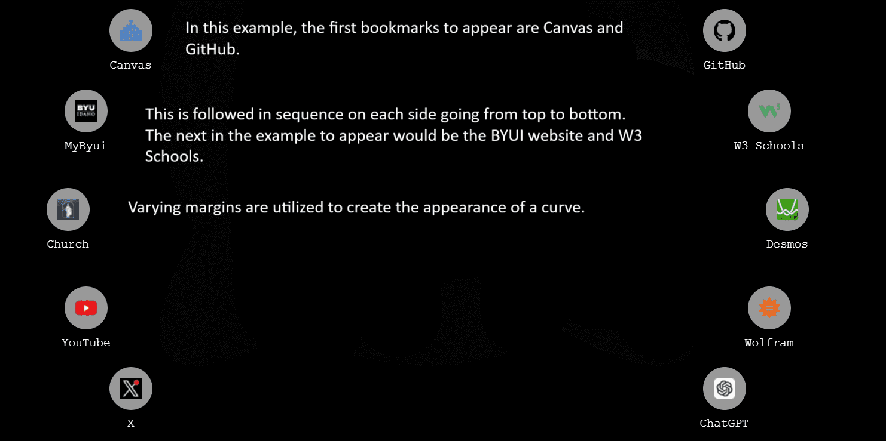

The background is only half the process, there are other visual elements utilized to catch the eye of the user such as all the text being typed out and each of the bookmarks appearing one by one.
There are 5 text areas which type out one by one: the Welcome message, the search bar message, the email link title, the secondary link title, and tertiary link title. These are pulled from what the user has set them to be, and on startup each title/message is passed through a function that outputs a list of stages to iterate through to simulate the effect of the text being typed out. For example, if my welcome message is "Hello" the list of iterable stages would look like this: "['H_','He_','Hel_','Hell_','Hello']". The script is running 60 frames or times each second, so to space out each iteration to emulate realistic typing, each update takes place every 4th frame. The end result: it looks super cool, as intended.

Bookmarks are set by users, but we\'re concerned with making them appear out of thin air so to speak. By default, the css opacity for each bookmark element is set to 0, making them invisible on startup. In the same function that types out the titles/messages the bookmarks on each side of the screen from top to bottom are revealed by setting their opacities from 0 to 1, popping in one by one. I think you get the point by now, the result looks cool of course.
